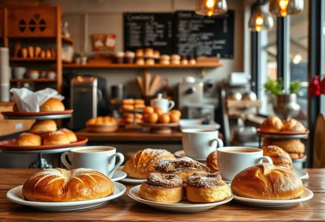

Creaciones dulces horneadas artesanalmente cada mañana con ingredientes frescos, mantequilla real y un toque de vainilla natural.
Desde roles de canela glaseados hasta pasteles esponjosos de frutos rojos, cada pieza está pensada para ser el acompañamiento perfecto de tu taza favorita.
